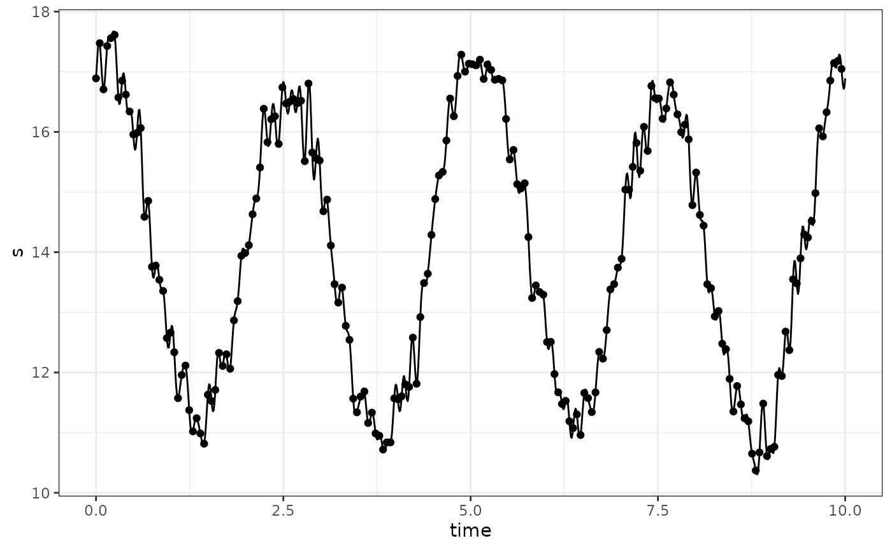

t <- 10
n <- 201
time <- seq(0, n - 1) * t / n
temp <- 14 +
0.5 * cos(2 * pi * (time - 0.5) * 2 / t) +
3 * cos(2 * pi * (time - 0.1) * 4 / t) + 0.3 * rnorm(n)
sp <- fft_rfft(temp)
freq <- fft_freq(n, t)
tt <- seq(0, t, by = 0.01)
s <- fft_reconstruct(sp, freq, tt)
tibble(time = tt, s) %>%
ggplot(aes(time, s)) +
geom_line() +
geom_point(aes(y = temp), data = tibble(time, temp)) +
theme_bw()